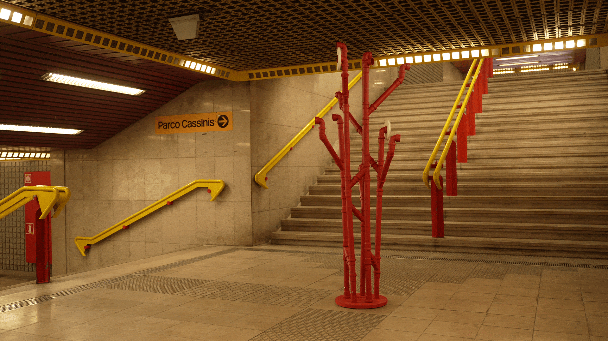
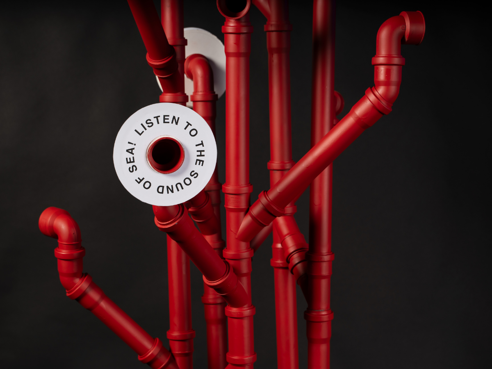
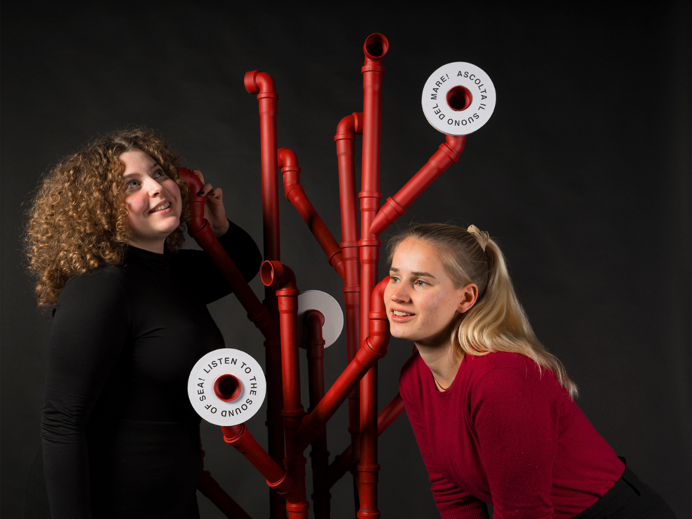

The studio aimed to investigate the forms of time through an ephemeral installation in Corvetto, a suburban neighbourhood of Milan characterized by a very fragmented community, vandalism and drug dealing.
In our field study we focused on the subway station "Porto di Mare" ("Seaport"), located quite far from the city centre and used only by a fairly small number of people. We created an object that challenges different levels of perception, offering the inhabitants of the neighbourhood a moment of relaxation and detachment from reality but at the same time an opportunity to regain possession of their own spaces.
Inspired by the name and history of the place we conceived an auditory installation that looks like a red coral. Made of PVC industrial pipes the structure is easy to carry around and disassemble. People can hear the sound of the sea according to the same acoustic phenomenon of resonation that we get when we put our ears next to seashells.
The experience offered to the people of the neighbourhood is individual but at the same time collective. With a little imagination, a person can detach from the reality of the metro station to dive into the depths of the sea, along with other passers-by.
On December 7th 2023 we installed our project at Porto di Mare metro station. We spent three hours on site, from 3 to 6 pm, the same time frame we previously analysed in the cronotope exercise, and the situation confirmed our previous observations: the station is quite empty and isolated.
Porto di Mare is located outside the city centre. During peak hours there are few passengers in the station, but between train arrivals, it is often completely empty. The gender ratio of the people present changes during the day; at later hours, most of the people passing are men.

